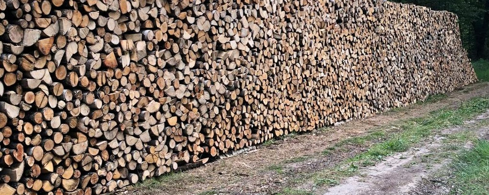
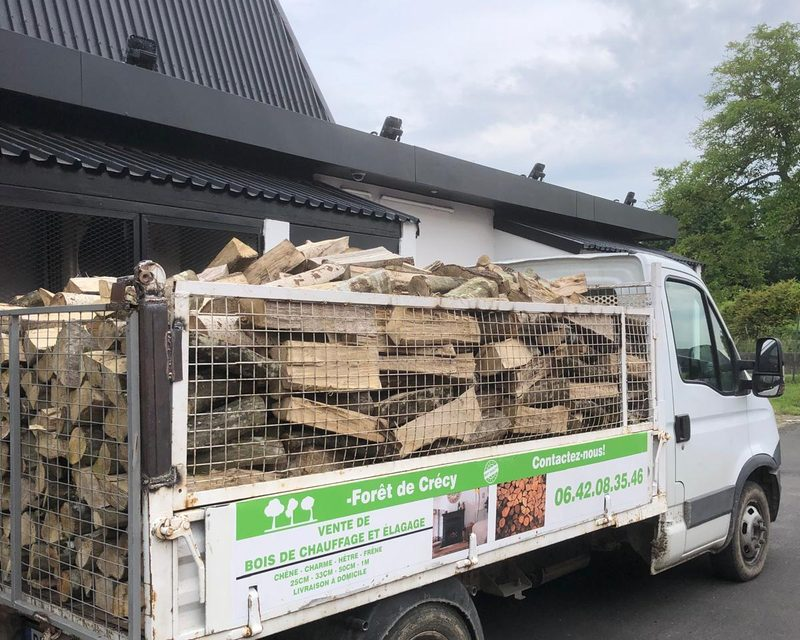
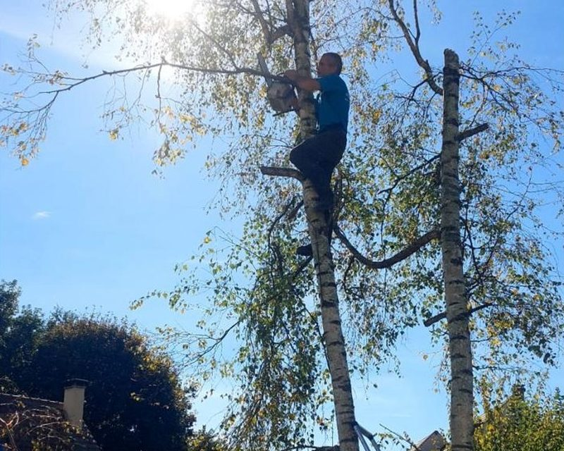

Chêne, charme, châtaignier. Bois sec, livré gratuitement en 77, 94 et 93
📞 06 42 08 35 46 Voir nos tarifs
Depuis plus de 15 ans, l'entreprise familiale Forêt de Crécy est spécialisée dans l'exploitation forestière et la livraison de bois de chauffage sec et de qualité, issu des forêts de Brie.
Nous maîtrisons toute la chaîne, de l'abattage à la livraison chez vous. Pas d'intermédiaire : le bois que vous brûlez vient directement de nos coupes.
Prix au stère, en vrac, livraison comprise sur toute notre zone. Plus la coupe est courte, plus la manutention est longue, d'où l'écart de prix.
Tous nos prix sont en TTC, au stère. Commande minimum ~3 stères selon la commune (un appel pour confirmer). Vendu en vrac ou sur palette. Paiement en espèces ou par chèque.
Nous privilégions les feuillus durs comme le chêne et le charme : plus le bois est dense, plus il chauffe fort et longtemps. Nous proposons aussi du châtaignier et du bois blanc selon les usages.
La référence. Dense, combustion lente, idéal pour tenir la nuit et les grands froids.
Le bois le plus dur de nos forêts. Belle flamme, fortes braises, excellent rendement.
Monte vite en température, parfait pour lancer le feu. Bon complément aux bois lents.
→ En savoir plus : quel bois choisir, taux d'humidité, stockage…
Basés à Crèvecœur-en-Brie, nous livrons gratuitement la Seine-et-Marne (77), le Val-de-Marne (94) et l'est de la Seine-Saint-Denis (93), dans un rayon d'une heure environ.
Camion benne, déchargement près de votre lieu de rangement. Délai 48 h à 7 jours selon la saison.
Travaux forestiers et entretien d'arbres dans toute la Brie. Contactez-nous pour un devis.
Possibilité de ranger votre bois à 20 € le stère, à voir ensemble selon l'accès et l'emplacement.
Au-delà du bois de chauffage, Forêt de Crécy intervient sur l'élagage, l'abattage et l'entretien d'arbres dans toute la Brie. Fort de 36 ans d'expérience en forêt, nous travaillons aussi bien pour les particuliers que pour les collectivités.

Un simple appel suffit. On confirme la quantité, la commune et le délai.
📞 06 42 08 35 46Du lundi au samedi, 8h – 18h · contact.boisdecrecy@gmail.com